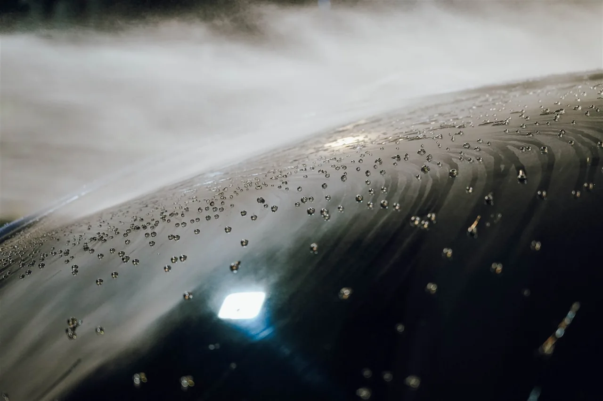
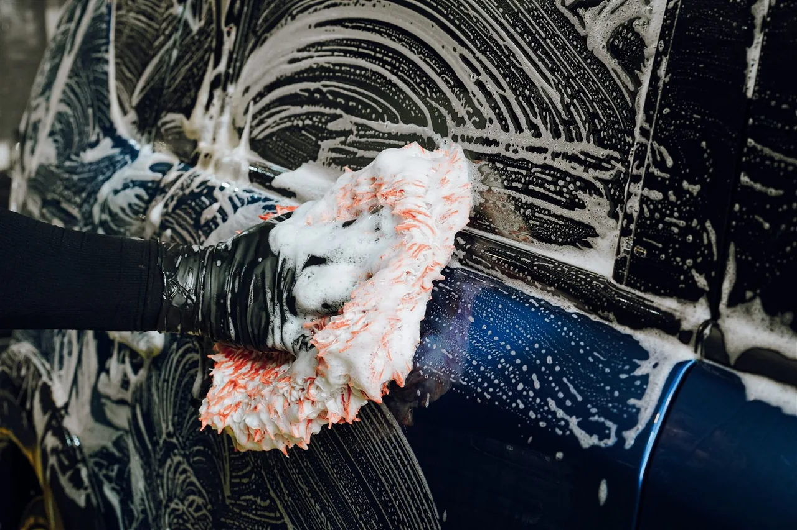

01 / Surface protection
撥水維護
洗後的俐落水珠，適合規律維護。
平均防護週期
1週～1個月
適合誰？怎麼照顧？
- 防護原理
- 依維護層級搭配撥水洗劑或含二氧化矽的噴霧封體，補充疏水表現。
- 適合車主
- 漆況穩定、定期清洗，偏好明顯水珠效果。
- 照護重點
- 先洗淨再維護；水珠漂亮，不代表鐵粉、水垢都已移除。
亮度、水珠、易清潔，各有側重。
適合你的維護節奏，才留得住效果。

以下為室內通勤、常態維護下的店內防護壽命估值，不是保固、免洗期限或下次預約時間。
你的主要停放環境以室內停放、日常通勤為估值基準；防護壽命與回洗間隔不同，請依實際汙染安排清洗與檢查。
洗後的俐落水珠，適合規律維護。
偏重顯亮與漆色深度，適合願意勤洗的車主。
合成聚合物配方，兼顧顯亮、滑順與疏水防護。
以疏水封體，兼顧滑順、抗汙與易清潔。
以成膜防護，延伸日常照護。
著重耐化學性與長期維護基礎。
清洗時補充日常疏水表現，適合入門保養與規律回洗。
為已做封體的車，補充滑順與水珠表現，搭配進階回洗服務。
依鍍膜車況搭配維護封體，照顧表層防護與清潔便利；不等同重新鍍膜。
實際維護價格將依回洗間隔、汙染程度與其他車況，提供專屬方案建議。
可能是保護逐漸衰退，也可能是汙染或水垢覆蓋。先辨別附著物與漆面狀態，再決定去汙、補充防護或重新施工。
室內少開可能延長表現；全戶外通常承受更多曝曬、雨水與附著汙染。停放環境是判斷因素，不直接換算固定倍數或保證月數。

中性泡沫覆蓋、流掛，再以足量水流沖淨。確認漆面仍維持美容後的滑順，沒有明顯顆粒或砂塵，再用乾淨柔軟的布輕柔擦乾。
先判斷髒污種類，選擇適合的藥劑做分解與軟化，再進入正洗環節。若仍有粗糙、油膜或附著物，不要直接擦乾或來回刷洗；難以判斷時，交由店內檢查。清洗時也要避免讓泡沫乾在漆面。
汙染附著的頻率較低，配合合適清洗，防護表現可能延長。依店內使用觀察，部分車況可見撥水超過1個月、蠟品超過3個月、封體約6個月；鍍膜在高標準維護下也可能超過2年。
這些是特定環境與維護下的案例，不是每台車的期限，也不將補充維護後的表現直接解讀為原始塗層完整保留。仍以實際檢查決定後續處理。
不等於。防護週期、回洗時間與回診檢查是不同概念。施工後會依你的使用情況，分別留下維護建議。
不一定。撥水是表面特徵之一；是否有鐵粉、粗糙、水垢或細紋，仍需另外檢查。